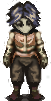
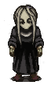
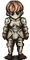
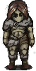
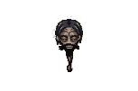
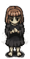

Personajes Jugables Principales
Dentro del juego existen cuatro personajes principales, de los cuales podremos escoger uno. Los otros tres personajes que no escojamos, se convertiran en NPCs jugables que podremos encontrar para unirlos a nuestro grupo.
|
Nombre Del Personaje |
Imagen del personaje |
Descripción del personaje |
|---|---|---|
|
Cahara |
 |
Cahara nació con el alma de lo inagotable, una fuerza que le impulsaba a anhelar constantemente la libertad y a explorar las profundidades de su creatividad. Por desgracia, la vida en la capital de los Santuarios del Este, Jettaiah, resultó ser un entorno duro e implacable para Cahara, ya que fue abandonado por sus padres, nada más nacer, y abandonado a su suerte. |
|
Enki |
 |
Enki Ankarian es un personaje jugable y un posible miembro del grupo en Fear & Hunger. Enki es un sacerdote oscuro que no se preocupa por cosas como la moral y la ética, y que domina la magia de sangre. Sin embargo, dedicarse a la magia ha debilitado su cuerpo físico. |
|
D'arce |
 |
D'arce Cataliss es un personaje jugable y un posible miembro del grupo en Fear & Hunger. Es una caballero con las costumbres puras y rectas del guerrero, ha sido entrenada en combate desde la infancia y destaca en el combate cuerpo a cuerpo con diferentes armas. |
|
Ragnvaldr |
 |
Ragnvaldr es un personaje jugable y un posible miembro del grupo en Fear & Hunger. Curtido en los gélidos vientos del norte, es un forastero, epítome de la supervivencia. Ragnvaldr conoce todos los trucos para mantenerse con vida, incluso en las situaciones más imposibles. |
| Otros Personajes Jugables | ||
|
Le'garde |
|
Le'garde es un joven cuya belleza se compara a menudo con la de los dioses. Tiene el pelo largo y castaño claro, ojos azules y un tono de piel pálido. En el juego se le describe como bastante delgado, pero no está claro si esto se debe a su encarcelamiento. Lleva una pesada armadura medieval con una notable grieta en forma de «x» en la placa del pecho. |
|
Nas'hra |
 |
Nas'hrah es un hombre sádico y sociópata, conocido por su comportamiento vulgar e irrespetuoso. Independientemente de con quién hable, ya sean sus compañeros Nuevos Dioses o sus propios aprendices, Nas'hrah suele proferir obscenidades e insultos, a menudo llamando a la gente "gusanos" o "asquerosos gusanos". |
|
La niña |
 |
La chica es de piel pálida y muy delgada, tiene el pelo corto y pelirrojo y unos grandes ojos azules. Lleva un vestido negro de gran tamaño sobre una camiseta interior de cuello verde oscuro, y parece tener muchas cicatrices pequeñas en los antebrazos. |